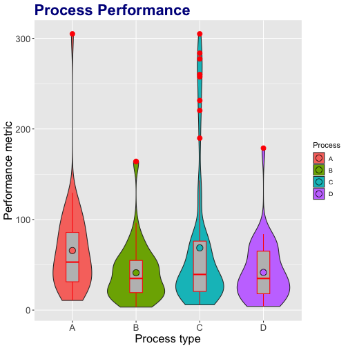

Process Analysis
A Developing Data Products Assignment Project
Process Analysis App
to get the overview of statistical parameters
to transform the data
to select time range
to view the distribution and scatterplots
to test for means equality
to test for trend change over time
Process Analysis App just does this. It helps to analyze and compare functionally equivalent processes.
Analyze data in two domains
Population

Time

Review some selected statistics in a tabular form
The table is live, check it out!
Where to find the stuff?
A simple documentation about the app is embedded in the app itself